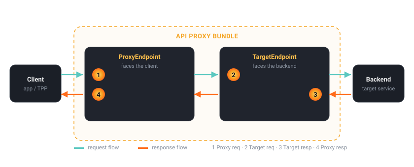

1.3 — Your first passthrough reverse proxy
Bottom line
A passthrough proxy is the simplest thing Apigee can serve: a basepath that forwards every request to one backend URL, attaching no policies at all. By the end of this session you'll have authored a proxy bundle by hand, deployed it to your eval org with apigeecli, and curled it to get a 200 and the backend's response — proving the whole control-plane → runtime → backend path end to end.
Why this exists
In Spring, the smallest possible "front a downstream service" is a controller that takes a request and forwards it — a thin @RestController calling a RestClient/WebClient, returning whatever the downstream said. It's code, it compiles into your jar, and it ships with your app.
A passthrough Apigee proxy is the same intent with no code. There is no handler method, no bean, no jar — just a proxy bundle: a small folder of XML that declares "clients call this basepath; forward to this backend." This matters because it's the floor you build up from. Every policy you'll add in Part 2 attaches to this exact skeleton. Before you can reason about auth, quotas, or mediation, you need the muscle memory of authoring, deploying, and calling the bare proxy — and seeing that the platform really did forward your request untouched.
It's also your first proof that the bootstrap from 1.2 works: a successful passthrough means your $ORG, $ENV, $TOKEN, and $RUNTIME_HOST are all correct and the control plane can push a revision the runtime actually serves.
Spring Boot bridge
A passthrough proxy is like a @RestController whose only job is to forward to a downstream service — except there is no code, only a proxy bundle. Where you'd write a method, Apigee reads two XML files:
| Spring | Apigee passthrough |
|---|---|
@RequestMapping("/v1/hello") on the controller |
ProxyEndpoint BasePath — /v1/hello |
| The dispatch that picks a handler method | RouteRule — picks which TargetEndpoint serves the request |
restClient.get().uri(BACKEND) in the method body |
TargetEndpoint URL — the one backend it forwards to |
| The compiled jar you deploy | The proxy bundle (a zipped apiproxy/ folder) you deploy |
The shape is identical: route in, forward out. You've just moved it from imperative Java into declarative config the platform runs for you.
Where the analogy breaks
A @RestController is never "empty" — even a pure forwarder is running your code, in your JVM, and you can drop a breakpoint in it. A passthrough proxy runs no logic of yours at all: Apigee receives the request, applies the configured policies (here, none), and forwards. There is nothing to step through because there is nothing to execute. The other break is routing — in Spring the controller is the destination; in Apigee the ProxyEndpoint (the client-facing contract) and the TargetEndpoint (the backend) are two separate objects, and the RouteRule is the seam between them. That separation looks like overkill for a passthrough, but it's the whole reason Apigee can later rewrite paths, swap backends per environment, and normalise responses without touching the client contract. You meet that two-endpoint flow model properly in 2.1.
The concept
Hold the silhouette of every proxy: a request comes in at the ProxyEndpoint, a RouteRule hands it to a TargetEndpoint, the backend responds, and the response retraces the path out. A passthrough is this shape with nothing attached at any of the points where policies could go.

A proxy bundle is a fixed folder layout. For a passthrough it's about as small as it gets:
apiproxy/
├── hello-proxy.xml # the proxy manifest: name, basepath ref, which endpoints exist
├── proxies/
│ └── default.xml # ProxyEndpoint: client-facing basepath + RouteRule
└── targets/
└── default.xml # TargetEndpoint: the single backend URL it forwards to
Watch out
"Passthrough" does not mean "no routing." A proxy with no RouteRule pointing at a TargetEndpoint forwards nowhere — you'll get an Apigee error, not your backend. The two endpoints are separate objects and the RouteRule is the mandatory seam between them; omitting it is a different failure from omitting policies.
There's no policies/ folder yet — a passthrough has no policies to store. The two files that actually define behaviour are the endpoints. The ProxyEndpoint declares the basepath clients call and which target to route to:
<!-- proxies/default.xml -->
<ProxyEndpoint name="default">
<HTTPProxyConnection>
<BasePath>/v1/hello</BasePath> <!-- clients call https://$RUNTIME_HOST/v1/hello -->
</HTTPProxyConnection>
<RouteRule name="default">
<TargetEndpoint>default</TargetEndpoint> <!-- forward to the target named "default" -->
</RouteRule>
</ProxyEndpoint>
The TargetEndpoint declares the one backend this proxy forwards to:
<!-- targets/default.xml -->
<TargetEndpoint name="default">
<HTTPTargetConnection>
<URL>https://mocktarget.apigee.net</URL> <!-- a public test backend that echoes -->
</HTTPTargetConnection>
</TargetEndpoint>
The proxy manifest ties them together and names the bundle:
<!-- hello-proxy.xml -->
<APIProxy revision="1" name="hello-proxy">
<ProxyEndpoints><ProxyEndpoint>default</ProxyEndpoint></ProxyEndpoints>
<TargetEndpoints><TargetEndpoint>default</TargetEndpoint></TargetEndpoints>
</APIProxy>
That's the entire passthrough: a basepath, a route, a backend URL, and zero policies. Apigee forwards /v1/hello/... to https://mocktarget.apigee.net/... and returns whatever the backend says.
Watch out
The proxy BasePath and the path your backend sees are not the same thing. Apigee strips the basepath and appends the remainder to the target URL — so /v1/hello/json reaches https://mocktarget.apigee.net/json, not /v1/hello/json. If you expect the backend to receive the full client path, you'll chase phantom 404s coming from the backend, not from Apigee.
Hands-on lab
Lab — author, deploy, and call a passthrough proxy
Prereqs: your eval org from 1.2, with $ORG, $ENV, $TOKEN, and $RUNTIME_HOST exported. ($TOKEN expires hourly — re-run export TOKEN="$(gcloud auth print-access-token)" if calls start returning 401.)
1. Create the bundle layout. Three files, no policies:
mkdir -p hello-proxy/apiproxy/proxies hello-proxy/apiproxy/targets
2. Write the proxy manifest to hello-proxy/apiproxy/hello-proxy.xml:
<APIProxy revision="1" name="hello-proxy">
<ProxyEndpoints><ProxyEndpoint>default</ProxyEndpoint></ProxyEndpoints>
<TargetEndpoints><TargetEndpoint>default</TargetEndpoint></TargetEndpoints>
</APIProxy>
3. Write the ProxyEndpoint to hello-proxy/apiproxy/proxies/default.xml — basepath plus a RouteRule, no PreFlow/PostFlow steps because there are no policies:
<ProxyEndpoint name="default">
<HTTPProxyConnection>
<BasePath>/v1/hello</BasePath>
</HTTPProxyConnection>
<RouteRule name="default">
<TargetEndpoint>default</TargetEndpoint>
</RouteRule>
</ProxyEndpoint>
4. Write the TargetEndpoint to hello-proxy/apiproxy/targets/default.xml — the single backend URL:
<TargetEndpoint name="default">
<HTTPTargetConnection>
<URL>https://mocktarget.apigee.net</URL>
</HTTPTargetConnection>
</TargetEndpoint>
5. Upload the bundle to the control plane. apigeecli zips the apiproxy/ folder and creates a revision (it does not deploy yet):
apigeecli apis create bundle --name hello-proxy \
--proxy-folder ./hello-proxy/apiproxy \
--org "$ORG" --token "$TOKEN"
6. Deploy that revision to your environment. --ovr overrides any existing deployment; --wait blocks until the runtime reports the revision is serving:
apigeecli apis deploy --name hello-proxy \
--org "$ORG" --env "$ENV" --ovr --wait --token "$TOKEN"
Watch out
--ovr silently overwrites the revision currently deployed to this environment. On your first deploy that's harmless, but reuse this same command later and it will replace whatever was serving — there's no prompt and no diff. Once a real backend sits behind the proxy, know which revision you're overwriting before you run this.
7. Call it through Apigee. The basepath is /v1/hello; mocktarget exposes /json, so the full path forwards to https://mocktarget.apigee.net/json:
curl -s -i "https://$RUNTIME_HOST/v1/hello/json"
What success looks like: the response status line is HTTP/2 200, and the body is the mocktarget JSON — {"firstName":"John","lastName":"Doe",...}. That payload came from mocktarget.apigee.net, through your proxy, untouched — which means your bundle deployed and the runtime is forwarding exactly as configured.
Verify it
You should see a 200 and the mocktarget body. Confirm the deployment from the control-plane side too — the proxy should report revision 1 deployed to your $ENV:
apigeecli apis listdeploy --name hello-proxy --org "$ORG" --token "$TOKEN"
curl -s -o /dev/null -w "passthrough status: %{http_code}\n" "https://$RUNTIME_HOST/v1/hello/json"
listdeploy should show hello-proxy revision 1 against your environment, and the curl should print passthrough status: 200. Try a different mocktarget path too — https://$RUNTIME_HOST/v1/hello/headers returns the headers the backend received, which is a good sanity check that the path after the basepath is forwarded verbatim.
Common failure modes
- 404 from the runtime. The basepath in the request doesn't match the ProxyEndpoint's
BasePath, or the revision isn't actually deployed. Symptom:404with an Apigee error body, not the mocktarget JSON. Check the path is/v1/hello/...and re-runapigeecli apis listdeploy. - Bundle won't create. A typo'd or misnamed XML file. Symptom:
apis create bundlefails validation, or the deploy reports the proxy is invalid. The endpoint names in the manifest (default) must match the filenames'name=attributes and live underproxies/andtargets/. - Deploy "succeeds" but the call 404s. You created the revision but skipped or didn't
--waiton the deploy. Symptom:listdeployshows nothing for your env. Re-run the deploy with--ovr --wait. - 401 on the curl. That's the backend's answer being passed through only if mocktarget required it — but far more often a
401here means your$TOKENexpired and the deploy failed, leaving an older or no revision serving. Refresh the token and redeploy. - Wrong host. Calling
apigee.googleapis.cominstead of$RUNTIME_HOST. Symptom: 404 from the management API. Proxies serve on the env-group hostname only.
Stretch goal
Point the proxy at one of your own Spring Boot services instead of mocktarget. Run the service locally, expose it with a tunnel (gcloud IAP, ngrok, or cloudflared) to get a public HTTPS URL, then change the TargetEndpoint URL to that tunnel address and redeploy. Now curl https://$RUNTIME_HOST/v1/hello/your-endpoint and watch your local controller's logs light up — the request arrived through Apigee. You've just fronted real Spring code with a gateway, with not a single line of new Java. Note how it feels: the backend is unchanged; the edge is pure config.
Recap & next
You authored a passthrough proxy bundle by hand — manifest, ProxyEndpoint, TargetEndpoint — deployed it to your eval org with apigeecli apis create bundle and apis deploy --ovr --wait, and curled it to a 200 with the backend's response. That single green call proves your whole stack from 1.2: control plane, runtime, and a reachable backend. You now hold the bare skeleton every policy in this course attaches to.
Next — 1.4: that deploy created revision 1 — a frozen, immutable artifact. You'll learn to use revisions to deploy, promote, and roll back changes the way you move tagged container images, so a bad change is a one-command rollback rather than a redeploy scramble.